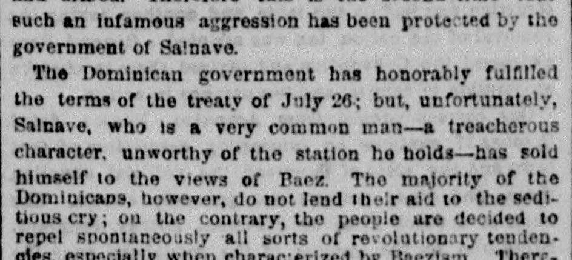

Article in transcriptionArtículo en transcripción
The New York Herald. New York [N.Y.], November 8, 1867. Page 5. Also published as the New York Daily Herald. Published by James Gordon Bennett. A daily newspaper, 1840–1920.The New York Herald. New York [N.Y.], 8 de noviembre de 1867. Página 5. También publicado como New York Daily Herald. Publicado por James Gordon Bennett. Periódico diario, 1840–1920. View the originalVer el original

This article is being transcribed again from the original newspaper page. It is not available to read in the meantime; it will return as soon as the new transcription is ready.Este artículo se está transcribiendo de nuevo desde la página original del periódico. Mientras tanto no está disponible para su lectura; volverá en cuanto la nueva transcripción esté lista.
FULL TEXT:TEXTO COMPLETO:
The New York Herald November 8, 18678 de noviembre de 1867
Original in English.Original en inglés.
ST. DOMINGO.SANTO DOMINGO.
SPECIAL CORRESPONDENCE OF THE HERALD.CORRESPONDENCIA ESPECIAL DE THE HERALD.
War With Hayti—Details of the Landing at Monte Christi.Guerra con Haití—Detalles del desembarco en Monte Christi.
HAVANA, Nov. 2, 1867.LA HABANA, 2 de noviembre de 1867.
El Occidente, a new paper which appeared yesterday, contains the following letter from a correspondent in St. Domingo city, dated October 19:—El Occidente, un nuevo periódico que apareció ayer, contiene la siguiente carta de un corresponsal en la ciudad de Santo Domingo, fechada el 19 de octubre:—
The friends of Buenaventura Baez, the ex-President of St. Domingo, who are the constant disturbers of the peace and tranquillity of this country, have just effected a landing near Monte Christi; and, after having surprised that indefensive population, occupied the hamlet of Guayubin. This foolish raid has naturally produced some alarm. Everybody asks what it means. The expedition sailed from Cape Haytien, in Haytien vessels, and armed. Therefore this is the second time that such an infamous aggression has been protected by the government of Salnave.Los amigos de Buenaventura Báez, el expresidente de Santo Domingo, que son los constantes perturbadores de la paz y la tranquilidad de este país, acaban de efectuar un desembarco cerca de Monte Christi; y, tras haber sorprendido a esa población indefensa, ocuparon la aldea de Guayubín. Esta insensata incursión ha producido naturalmente cierta alarma. Todo el mundo se pregunta qué significa. La expedición zarpó de Cabo Haitiano, en buques haitianos y armada. Por lo tanto, esta es la segunda vez que tan infame agresión ha sido protegida por el gobierno de Salnave.
The Dominican government has honorably fulfilled the terms of the treaty of July 26; but, unfortunately, Salnave, who is a very common man—a treacherous character, unworthy of the station he holds—has sold himself to the views of Baez. The majority of the Dominicans, however, do not lend their aid to the seditious cry; on the contrary, the people are decided to repel spontaneously all sorts of revolutionary tendencies, especially when characterized by Baezism. Therefore it has been easy to completely defeat the adventurous filibusters.El gobierno dominicano ha cumplido con honor los términos del tratado del 26 de julio; pero, por desgracia, Salnave, que es un hombre muy vulgar —un carácter traicionero, indigno del puesto que ocupa—, se ha vendido a las miras de Báez. La mayoría de los dominicanos, sin embargo, no presta su ayuda al grito sedicioso; por el contrario, el pueblo está decidido a rechazar espontáneamente toda clase de tendencias revolucionarias, especialmente cuando se caracterizan por el baecismo. Por lo tanto, ha sido fácil derrotar por completo a los aventureros filibusteros.
On the 14th inst., General Polanco attacked them so gallantly at Esperanza that they were completely cut to pieces, so that the enemy will not be able easily to rally. The question now follows, What will be the attitude which the Dominicans should assume and continue with Hayti? That is the question. General Cabral, at all events, has ordered the Minister lately sent to Port au Prince to exchange the ratifications of the treaty to suspend all relations with Salnave's government, and leave the Haytien territory without delay. For this purpose he despatched a schooner to Jacmel with the necessary instructions to the Minister.El 14 del actual, el general Polanco los atacó con tanta valentía en Esperanza que quedaron completamente destrozados, de modo que el enemigo no podrá rehacerse fácilmente. La pregunta que surge ahora es: ¿cuál será la actitud que los dominicanos deben asumir y mantener con Haití? Esa es la cuestión. El general Cabral, en todo caso, ha ordenado al ministro enviado recientemente a Puerto Príncipe para canjear las ratificaciones del tratado que suspenda todas las relaciones con el gobierno de Salnave y abandone el territorio haitiano sin demora. Para este propósito, despachó una goleta a Jacmel con las instrucciones necesarias para el ministro.
Considering the manner in which the Dominican government has been treated, not by Hayti, but by Salnave, it is very possible that it may determine to revenge itself, and, once this step is taken—and there is little doubt it will be—the Dominicans may rely on a successful issue. With five thousand men armed with machetes they can march to the capital of Hayti, and when once occupied they would not retire till the government of Salnave rendered the necessary guarantees. It is unfortunate that the question cannot be settled by any other means; but the policy of the country, and other reasons in favor of its people, demand such a course.Considerando la manera en que el gobierno dominicano ha sido tratado, no por Haití, sino por Salnave, es muy posible que se decida a vengarse y, una vez dado este paso —y hay pocas dudas de que así será—, los dominicanos pueden confiar en un resultado exitoso. Con cinco mil hombres armados con machetes pueden marchar hacia la capital de Haití, y una vez ocupada no se retirarían hasta que el gobierno de Salnave ofreciera las garantías necesarias. Es lamentable que la cuestión no pueda resolverse por ningún otro medio; pero la política del país, y otras razones en favor de su pueblo, exigen tal curso de acción.
General Cabral is ready to march immediately for Cibao. Before appearing on the frontiers it will be well that he runs over such provinces as may claim his presence. This tour may take up a month unless he forces the northeastern line, as is his intention.El general Cabral está listo para marchar de inmediato hacia el Cibao. Antes de presentarse en las fronteras será conveniente que recorra aquellas provincias que puedan requerir su presencia. Este recorrido puede tomar hasta un mes, a menos que fuerce la línea del noreste, como es su intención.
The government agent in London has negotiated a loan of $2,000,000.El agente del gobierno en Londres ha negociado un préstamo de $2,000,000.
There is considerable animation in mining and railway enterprise. Many vessels are expected, also, to load guano.Hay considerable animación en las empresas mineras y ferroviarias. Se esperan también muchos buques para cargar guano.
The tobacco crop has been good, and the loadings in our harbor are daily increasing.La cosecha de tabaco ha sido buena, y los cargamentos en nuestro puerto aumentan diariamente.